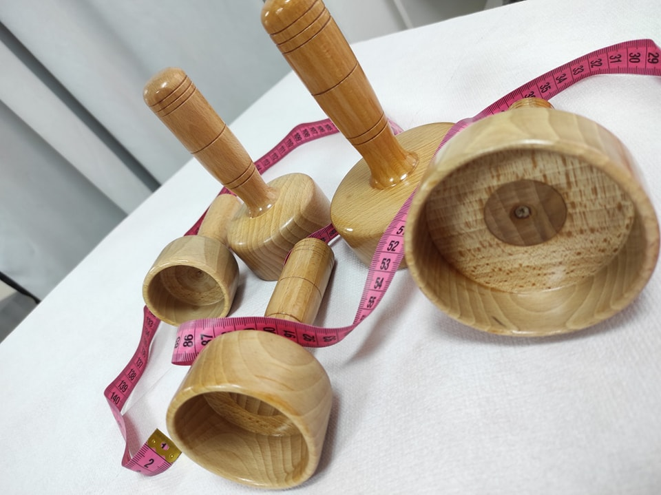
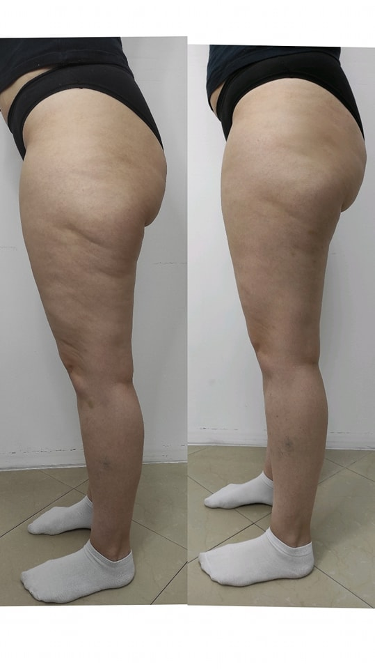

Njega tijela

Klasična maderoterapija
Prirodna metoda za oblikovanje tijela i opuštanje
Klasična maderoterapija posebna je tehnika masaže koja se izvodi pomoću drvenih valjaka i anatomskih drvenih alata prilagođenih različitim dijelovima tijela. Ova metoda potiče limfnu drenažu, poboljšava cirkulaciju i pomaže u smanjenju celulita te oblikovanju tijela na potpuno prirodan način.
Maderoterapija je idealan tretman za osobe koje žele opuštanje, osjećaj lakoće u tijelu i vidljivo zaglađeniju kožu.
Prednosti klasične maderoterapije:
- Potiče cirkulaciju i limfnu drenažu
- Pomaže u smanjenju celulita
- Oblikuje i zateže tijelo
- Smanjuje osjećaj težine i natečenosti
- Opušta mišiće i smanjuje napetost
- Poboljšava tonus i izgled kože
- Prirodna i neinvazivna metoda
Trajanje tretmana: 45 – 60 minuta
Prvi rezultati: Često vidljivi već nakon nekoliko tretmana - glađa i zategnutija koža, smanjen izgled celulita, osjećaj lakoće u nogama, bolje oblikovana silueta.

Brazilska maderoterapija
Intenzivno oblikovanje tijela i lifting efekt
Brazilska maderoterapija napredna je tehnika oblikovanja tijela inspirirana brazilskim metodama masaže. Tretman se izvodi posebnim drvenim alatima i dinamičnijim pokretima kako bi se postigao intenzivniji efekt zatezanja, oblikovanja i podizanja tijela.
Ova metoda posebno je popularna zbog vidljivog lifting efekta na stražnjici, nogama i području trbuha.
Prednosti brazilske maderoterapije:
- Intenzivnije oblikovanje tijela
- Lifting efekt stražnjice
- Smanjenje celulita i viška tekućine
- Poboljšanje tonusa kože
- Potiče cirkulaciju i limfnu drenažu
- Zategnutiji i glađi izgled kože
- Prirodna i neinvazivna metoda
Trajanje tretmana: 60 minuta
Rezultati: Vidljivo zategnutija koža, smanjenje celulita, definiranije konture tijela, lifting efekt stražnjice, osjećaj lakoće i zategnutosti.
Kako izgleda tretman?
Tretman započinje kratkom procjenom i prilagodbom intenziteta masaže prema potrebama klijentice. Posebnim drvenim alatima masiraju se kritične zone poput nogu, stražnjice, trbuha i bokova. Masaža potiče razgradnju masnih naslaga i stimulira limfni sustav, čime se tijelo prirodno oslobađa viška tekućine i toksina.
Procjena i priprema
Kratka procjena i prilagodba intenziteta masaže prema vašim potrebama.
Masiranje
Masiranje kritičnih zona drvenim alatima - noge, stražnjica, trbuah i bokovi.
Stimulacija
Stimulacija limfnog sustava i poticanje razgradnje masnih naslaga.
Završetak
Oslobađanje viška tekućine i toksina, završna njega kože.